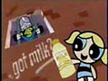

■Buttercup [I'm a Super Girl]
|
|
 |
■Fight the Power
|
 |
■Ｗin,Lose or Draw
|
 |
■Work Soul Out!!
|
 |
■CREAM PUFF SHUFFLE
|
 |
■Power of the female
|
 |
■Go monky Go
|
 |
■Go monky Go（USA版）
|
■What's His Name Dexter
|
|
■Signal in the Sky (Let's Go)
|
|
 |
■That's What Girls Do
|
[groovies]
groovies（グルービーズ）とは、カートゥーンネットワークで制作したカートゥーン作品をモチーフとしたミュージックプロモーションビデオのようなもの。もちろんPpG以外にも沢山作られていて傑作も多い。

[ミニクリップ]
カートゥーンネットワークでは番組と番組の間の穴埋めに、ちょっとした映像作品が流れる。短いのから長いのまで、とりあえず。grooviesや番宣もミニ番組といえばそうなんだが、それ以外のその他の映像作品ということにする。
 |
■PpGアイキャチ番組の途中などに入るショートアニメ風のアイキャッチ。 |
 |
■正義専門チャンネルジャスティスフレンズのメイジャー・グローリーが「集合〜〜〜！」と呼びかけてカートゥーンキャラが集まるというもの。これは正義の味方が集合するバージョン。他にも美人とか、メガネとかある。 |
■ヴァーチャルマシン「かわいいだけじゃイヤ」で登場したヴァーチャル戦闘室なんだが、懐かしのハンナバーベラキャラがモンスター（？）として登場する。ショートギャグぽくてけっこう好きかも。 |
|
■おじぎするPpG最近はめったに見ないんだけど、白バックにパワーパフガールズが登場し、バブルスが手を振った後、一同そろってお辞儀をする。単純だがめっちゃかわいい。 |
|
 |
■ケミカルXでCNPpGのオープニングと同じく、博士が間違ってケミカルXをいれちゃった・・・で、出来たのがCNのロゴというやつ。 |
 |
■バブルスと電話ホットラインから市長の電話。「たいへんじゃー」と電話の先でわめいているものの、バブルスはぼーっと聞いてるだけという、なんかシュールなクリップ。 |
 |
■CartoonCartoonsイントロミニタイトルCartoonCartoons枠が始まる前に流れるミニタイトル。CartoonCartoonsのテーマソングと共に、ロゴが現れ、そのロゴの「O」のところからバブルスがぴょこっと出てきて、「かーとぅーん！かーとぅーん！」と叫ぶ。very
cute! |
■only onガールズの一部がちらりと現れ、 バブルス版や バターカップ版もある。 |
|
■Staylongers海外で人気をだった、無人島に数名をおきざりにして、毎回投票で脱落者を決めてゆき、極限状態の人間のエゴや葛藤をみて楽しむというなんとも趣味のよい番組「サバイバー」（日本でも公開されたり、同じようなものが作られた）のパロディ。 ハンナ・バーベラ組とカートゥーンカートゥーンズ組に別れてカートゥーンキャラ達が本音でしのぎあう。パワパフからはブロッサムがCC組に出場。新作がまだこなかったころ、ここで新録音の麻生ブロの声を聞いて泣いたものだ。 ・12夜 あと、たしか「リーダーを決めよう」という回があったと思うのだが、撮りのがしていたようだ。無念。だれか録画してません？全4話でよいのかな？ |
|
■世界中のの笑われものカートゥーンキャラのおしりばかり出てくるミニクリップ。ガールズは出てこないんだけど、一応市長が登場したので。 |
|
 |
■パワパフ質問箱テレ東の放送が終了し、CNに放送が移ったころのパワパフでは、視聴者からガールズへの質問を募集して、それに答えるというミニクリップがあった。 まずは、「ハガキにガールズの誰に何という質問をしたいか応募してね」というものがあり、
|
 |
■Powerpuff Girls: Reflections海外ではこんなのも流れたようだ。 |
 ・最終夜
・最終夜[番宣]
番組宣伝用局内CM。けっこう凝っていて楽しい。特に時期ものなので見逃すと二度と見ることは出来ないことが多い。
 ■PpG、日本CNで放送開始！
（2001/10）
■PpG、日本CNで放送開始！
（2001/10）
■ここにありますCN.co.jp
■ppgアンダーグラウンド（2003/8）
 ■ゲームグランプリ（2003/8）
■ゲームグランプリ（2003/8）
■ザ･ファイト・ビフォア・クリスマス
（2003/12）
 ■ガール!ガール!ガール!PpGひな祭りスペシャル(2004/3）
■ガール!ガール!ガール!PpGひな祭りスペシャル(2004/3）
■夏来スペシャル（2004/6）
■ゲームグランプリ（2004/6）
 ■秋の新作コレクション（2004/10)
■秋の新作コレクション（2004/10)

[トゥーンうたいまショー]
多分日本オリジナルのミニ番組。カートゥーン作品内の歌パートの部分だけを切り取って、ミニ番組としたもの。なので、映像的には作品で見られるものと同じ。2004年から日本CNで流れ始めた。
 ■ともだちになりたい
■ともだちになりたい
 ■メイジャーマンの歌
■メイジャーマンの歌
■愛が世界を動かすの（仮）
ガールズのバンドのやつ
[CM]
PpGを使ったCM
 ■PpGケイタイサイト
■PpGケイタイサイト

 ■腕時計通販
■腕時計通販
■ファミレスでPpGが見れる「Puls e」
■ファミリーレストラン「ジョイフル」CM(2003〜2004）
■got milk!「ブロッサム編」
■got milk!「バブルス編」
■got milk!「バターカップ編」
 ■Dreame in Style ＞
■Dreame in Style ＞